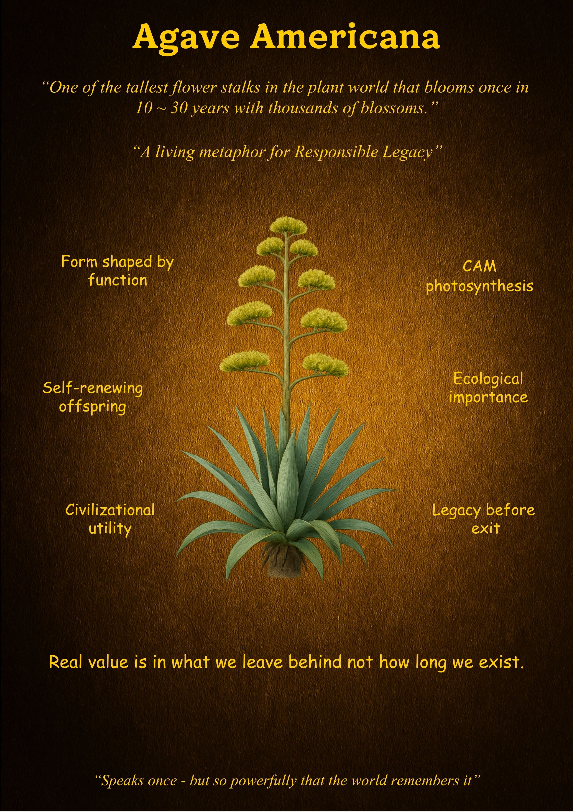

Agave Americana
"A living metaphor for Responsible Legacy."
What is Unique
The Agave Americana is a master of the singular, titanic gesture. Though it lives for 10 to 30 years, it is colloquially known as the "Century Plant" because of the immense patience it displays. When the time is right, it produces one of the tallest flower stalks in the entire plant kingdom, surging upward with thousands of blossoms in a display that is both a climax and a conclusion. It is a biological event that proves depth of preparation determines the height of one's impact.
Overall Synthesis
This exhibit explores the "Architecture of the Exit." The Agave Americana does not fade quietly into the landscape; it converts every drop of its decades-long accumulation of energy into a final, soaring legacy. It is a life shaped by the understanding that real value isn't found in how long we linger, but in the magnitude of what we leave behind for the world to remember.
Its Functioning Systems
Principles & Wisdom
The Agave Americana offers a profound lesson on **Meaning over Longevity**. It reminds us that **"Real value is in what we leave behind, not how long we exist."** In a society that fears endings, the Agave celebrates them as the moment of greatest contribution. It teaches us to be "Speaks once - but so powerfully that the world remembers it." Its wisdom asks us: are we merely enduring time, or are we building the internal strength required to leave a legacy that supports the next generation?